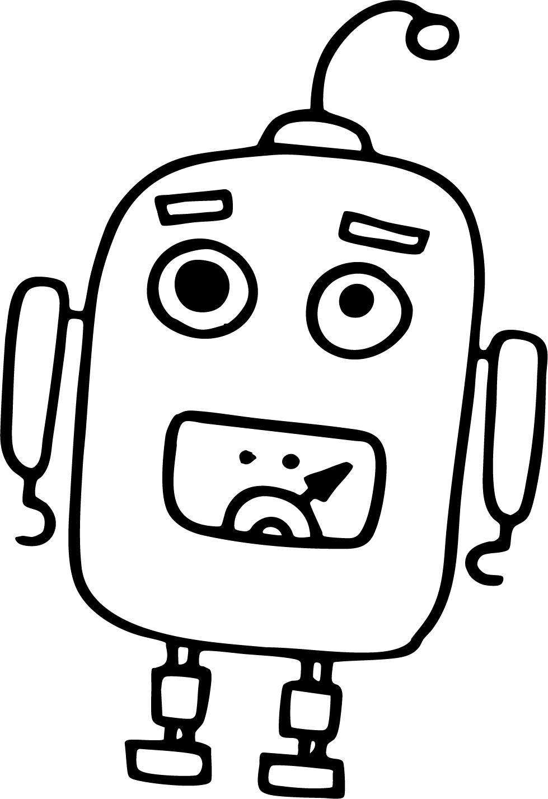
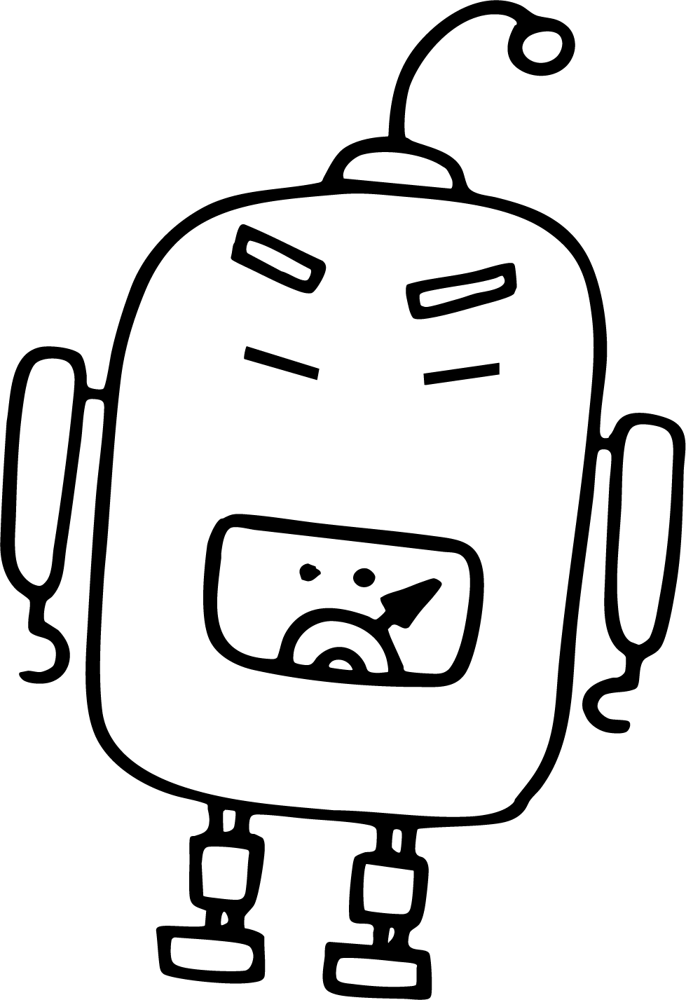

Good taste is most useful when paired with the knowledge to deploy it.
Brand worlds. Creative systems.
Stories that feel like something.


Southern-raised Brooklyn creative who came up making music and directing music videos, which gave me something most creative careers don't start with: a real understanding of what the full arc of creative work actually feels like.
That foundation never left.
I've spent years leading campaign direction for clients across entertainment, music, and digital media, building brand worlds and storytelling frameworks that had to work across channels, audiences, and stakeholders simultaneously. I specialize in protecting tone and continuity across complex creative environments, and I'm equally comfortable leading a concepting session, selling an idea to a skeptical client, or getting into the weeds with a team to make sure the execution lands the way the concept intended.